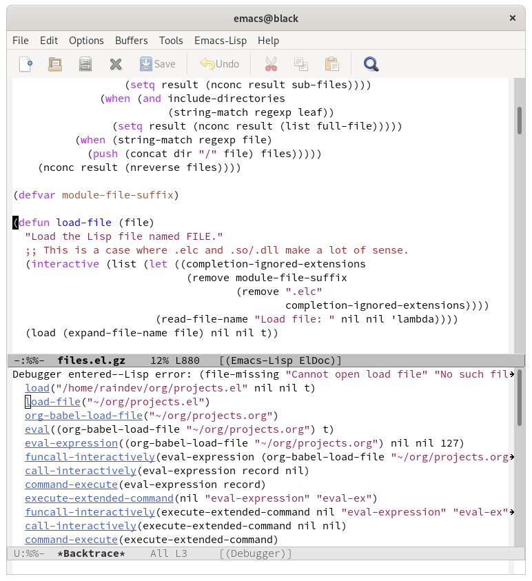
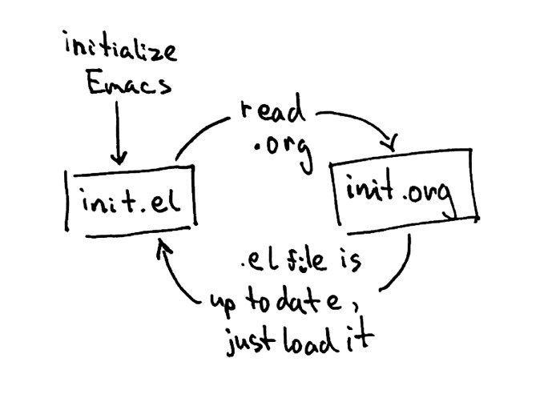

How to not write Emacs config in Org
I have started simple. ~/.emacs.d/init.el had just one line:
(org-babel-load-file "~/.emacs.d/init.org")
init.org was simple too:
#+begin_src emacs-lisp (setq org-directory "~/org") #+end_src
After restarting Emacs everything seems to have worked fine C-h v
told me that the value of org-directory is indeed ~/org. So far
so good. I have opened init.el and its content was:
(setq org-directory "~/org")
That's right, the same as the code I had in the source block in
init.org. Clumsy Emacs beginner, I thought, I must have written the
wrong file! I have fixed it quickly to put org-babel-load-file in
the right place and restarted Emacs. Right after start *Warnings*
buffer popped up and showed me this error:
error: Recursive load, /home/raindev/.emacs.d/init.el, /home/raindev/.emacs.d/init.el, /home/raindev/.emacs.d/init.el, /home/raindev/.emacs.d/init.el, /home/raindev/.emacs.d/init.el
Whoa! My first line of configuration and somehow I broke Emacs
already and made it load the config again and again. I searched the
Internet for the error message in vain, in frustration went to #emacs
and cried for help. I've been told that it looks like
org-babel-load-file needs something that hasn't been initialized yet
causing Emacs to attempt to load the config again. It makes sense, I
thought. With some guidance (thanks pjb!) I made Emacs load the .org
file 5 seconds later when init.el has already been processed:
(defun load-org-config () (org-babel-load-file "~/.emacs.d/init.org")) (run-at-time 5 1 'load-org-config)
Once again, I restarted Emacs. This time, no error messages on
startup. When I switched to *Messages* however, I saw an endless
stream of:
Loading /home/raindev/.emacs.d/init.el (source)...done Loaded ~/.emacs.d/init.el Loading /home/raindev/.emacs.d/init.el (source)...done Loaded ~/.emacs.d/init.el Loading /home/raindev/.emacs.d/init.el (source)...done Loaded ~/.emacs.d/init.el ...
Hm, this is interesting, I thought. The problem happened after
Emacs was fully initialized as well. I killed unresponsive Emacs and
started it without loading the config using emacs -q. I hit M-x
and used eval-expression to run (org-babel-load-file
"~/.emacs.d/init.org"). Not surprisingly, the same thing happened:
Emacs started reloading the config endlessly.
In despair, the next time I loaded just a random projects.org file
that didn't have any configuration or any source code whatsoever. I've
got an error. But also something magical happened - a debugger popped
up!

I could see the chain of function calls that led to the error. Even more I could click on them and see the source code. Wow! This is amazing! I had the source code of Emacs' packages right in front of me.
I started exploring. The error message was:
(file-missing "Cannot open load file" "No such file or directory" "/home/raindev/org/projects.el")
That's strange, I thought. I have loaded projects.org and not
projects.el. Something is going on. Looking at the backtrace I
could see org-babel-load-file("~/org/projects.org") - that's the
function I have called. The next call was
load-file("~/org/projects.el") - .org has changed to .el. Something
must have happened during the previous step. I clicked on
org-babel-load-file and started reading the code:
This function exports the source code using `org-babel-tangle' and then loads the resulting file using `load-file'
And that's what happened a couple of lines below:
(let* ((tangled-file (concat (file-name-sans-extension file) ".el")
So, the function exports the source code to a file with the same name
but .el extension. Ah! As there was no code in projects.org
nothing was exported leading to file-missing error.
Going back to the original problem with the new knowledge: why wasn't
init.el replaced by the code from init.org then? Oh, wait, wasn't
it? Remember the first time I loaded the Org config, I discovered
I've accidentally written the config to init.el directly. I didn't!
;; Tangle only if the Org file is newer than the Elisp file
org-babel-load-file did. As the comment says, the function only
writes .el file if the .org file is newer. That's what happened the
first time. Afterwards I kept tweaking init.el so it was always
newer than init.org. But what else, when org-babel-load-file was
executed Emacs thought init.el is the file that has the code
exported from init.org and loaded it. In turn it has called the
same function and entered the endless cycle.

The solution was simple - give the Org config a different name:
(org-babel-load-file "~/.emacs.d/config.org")
And that's it. config.org will get exported to config.el and
loaded once.